Un Mosaico de Agua y Selva
El estado Delta Amacuro, ubicado en el extremo oriental de Venezuela, es una de las regiones más singulares y biodiversas del planeta. Su geografía está dominada por el majestuoso Delta del Río Orinoco, un laberinto de miles de caños, ríos e islas que se abren en abanico antes de entregar sus aguas al Océano Atlántico.
Datos clave:
- Extensión: 40,200 km² (4.6% del territorio nacional)
- Capital: Tucupita
- Fundación: 1884 como territorio federal
- Delta del Orinoco: 18,810 km² divididos en ~60 caños y 40 ríos
- Población indígena: Mayormente Warao, con 8,000-9,000 años de antigüedad
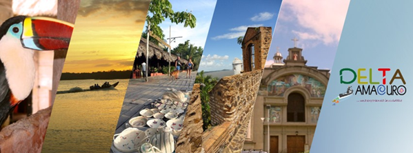
Paisaje del Delta del Orinoco
Identidad Regional
Himno del Estado Delta Amacuro
Letra: José Joaquín de León | Música: José Inés Richemón
CORO
Amacuro Girón de la patria
del proceso estandarte y blasón,
en tu delta germina la fibra
que dará más firmeza y unión.
I
Tus compañías y ríos hermosos
del progreso general la acción,
es inmenso y es fértil tu suelo
que estremece de grande emoción.
II
En tu suelo fulgura la estrella
de la noble y heroica deidad;
sitio honroso y trabajo fecundo
tendrás siempre con gran libertad.
III
Tu pujanza y denuedo es lección
que se vierte grandiosa en historia,
y que aumente los patrios anales
con el bello fulgor de la gloria.
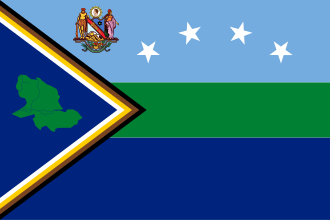
La Bandera
Reflejo de nuestros cielos, selvas y la red fluvial del Orinoco.
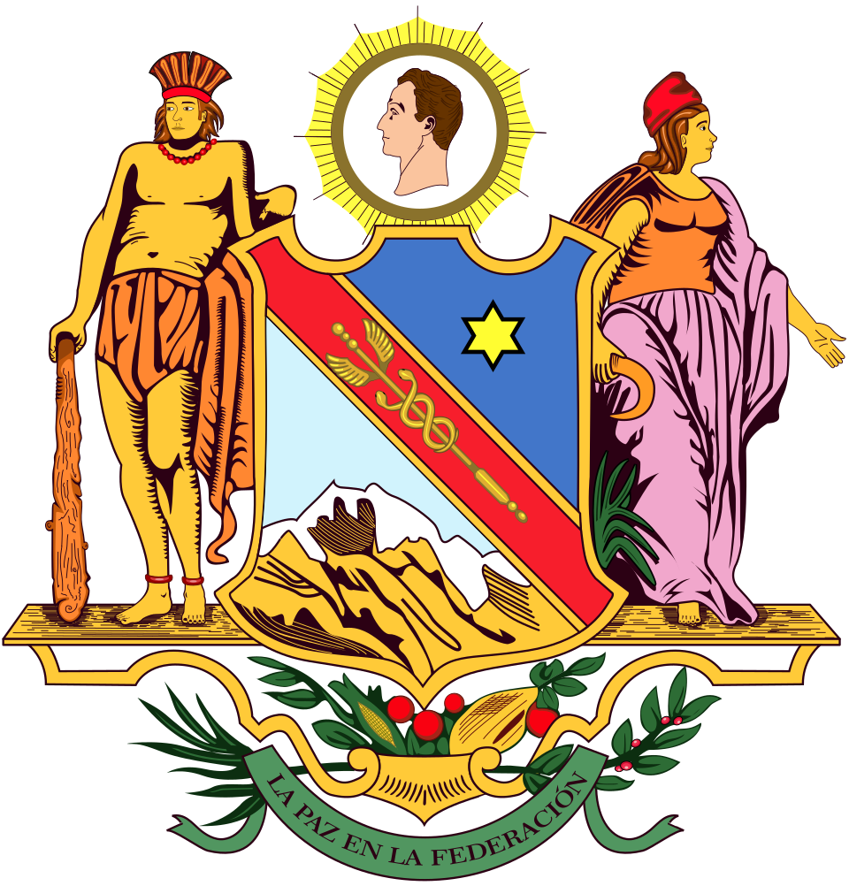
El Escudo
Emblema de la fuerza y la riqueza natural de la tierra deltana.
El Pueblo Warao: Guardianes del Delta
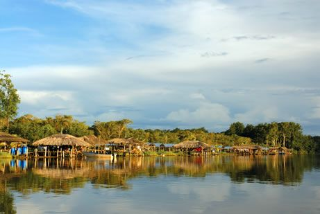
Los Warao, cuyo nombre significa "gente de la canoa" o "gente de bajío", son el grupo humano más antiguo de Venezuela. Su cultura ha florecido en este entorno acuático durante aproximadamente 8,000-9,000 años.
Vivienda y Vida Cotidiana
Viven en palafitos, viviendas construidas sobre pilotes de madera a orillas de los ríos, perfectamente adaptadas a las crecidas estacionales. La curiara (canoa monóxila) es el centro de su vida, utilizada para la pesca, el transporte y la conexión entre comunidades.
La Palma de Moriche: Árbol de la Vida
Su cosmovisión está profundamente ligada a la palma de moriche, considerada sagrada:
- Alimento: Frutos nutritivos y harina para pan (Sarao o Yuruma)
- Artesanía: Fibra para cestas, chinchorros y objetos decorativos
- Construcción: Madera para viviendas y estructuras
- Proteína: Gusanos de moriche (mojojoy), fuente tradicional de nutrientes
Sabores del Río y la Selva
La gastronomía deltana es un reflejo de su entorno acuático, con platos basados en la abundante pesca del Orinoco y los frutos de la palma de moriche.
Lau-Lau
Pez de carne blanca y delicada del río Orinoco. Se prepara frito, asado o en guisos. Su sabor suave lo hace favorito en la región deltana.
Gusanos de Moriche
Larvas de escarabajo que crecen en las palmas de moriche. Fuente tradicional de proteína para los Warao, se consumen asados o fritos. Alto valor nutricional.
Pan de Moriche
Pan tradicional Warao llamado "Sarao" o "Yuruma", elaborado con harina extraída del tronco de la palma de moriche. Base de la alimentación ancestral.
Mono, bebida tradicional warao
Esta bebida se elabora con la fruta de la palma de manaca o moriche, que lleva por nombre mono.
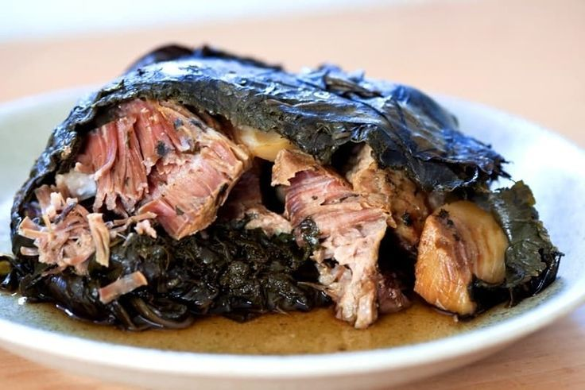
Lau-Lau Frito
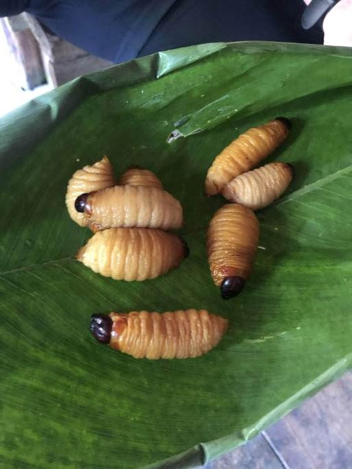
Gusanos de Moriche
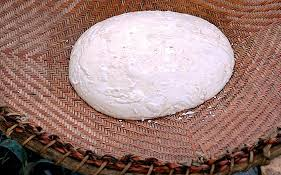
Pan de Moriche (Yuruma)
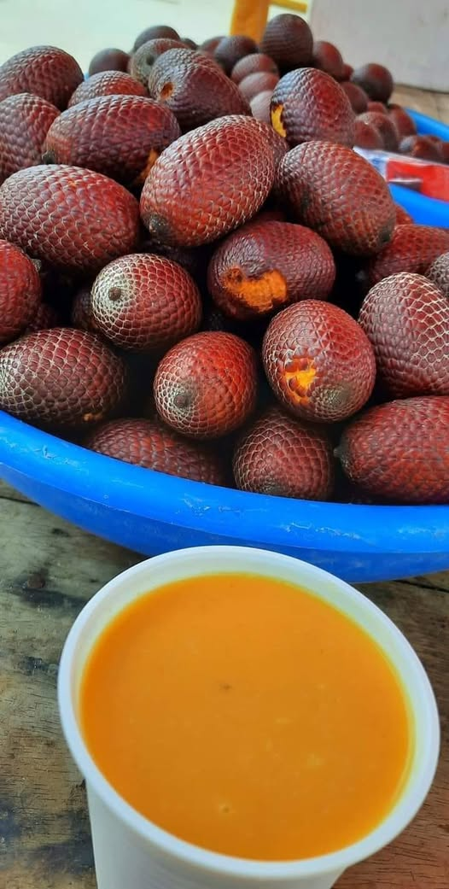
Mono, bebida tradicional Warao
Santuario de Vida Silvestre
El Delta del Orinoco es uno de los ecosistemas mejor conservados de Venezuela y un patrimonio natural único en el mundo. Su diversidad abarca desde selvas tropicales hasta manglares costeros.
Flora: El Pulmón del Delta
La vegetación del estado está condicionada por las inundaciones y la salinidad cerca del mar. Es un paraíso de biodiversidad botánica.
Palma de Moriche (Mauritia flexuosa)
Conocida como el "árbol de la vida" para los Warao. De ella obtienen alimento, fibra para artesanías y material para sus viviendas.
Manglares
Bosques costeros que sirven de barrera natural y refugio para especies marinas. Destacan el mangle rojo, negro y blanco.
Lirios de Agua y Lotos
Plantas acuáticas que cubren grandes extensiones de los caños más tranquilos, creando alfombras verdes y floridas..
Galería de Flora
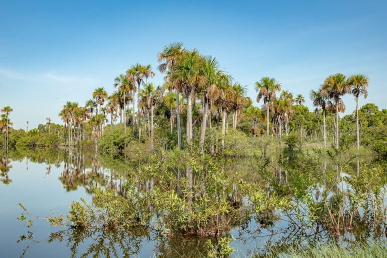
Palma de Moriche
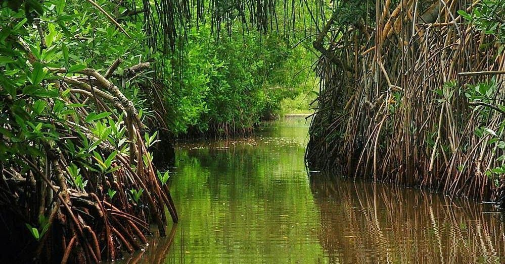
Manglares Costeros
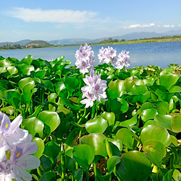
Los lirios de agua - Eichhornia crassipes
Fauna Emblemática
Jaguar
El felino más grande de América habita en las selvas deltanas. Depredador tope del ecosistema, excelente nadador.
Guacamayas
Aves de plumaje colorido que llenan el cielo del delta. Como la guacamaya azul y amarilla.
Manatí del Caribe
Mamífero acuático herbívoro que habita en caños y ríos del delta. Especie vulnerable que requiere protección.
Robiblando del Delta
Es una especie paseriforme pequeña marrón estriado que habita en bosques inundables maduros.
Galería de Fauna
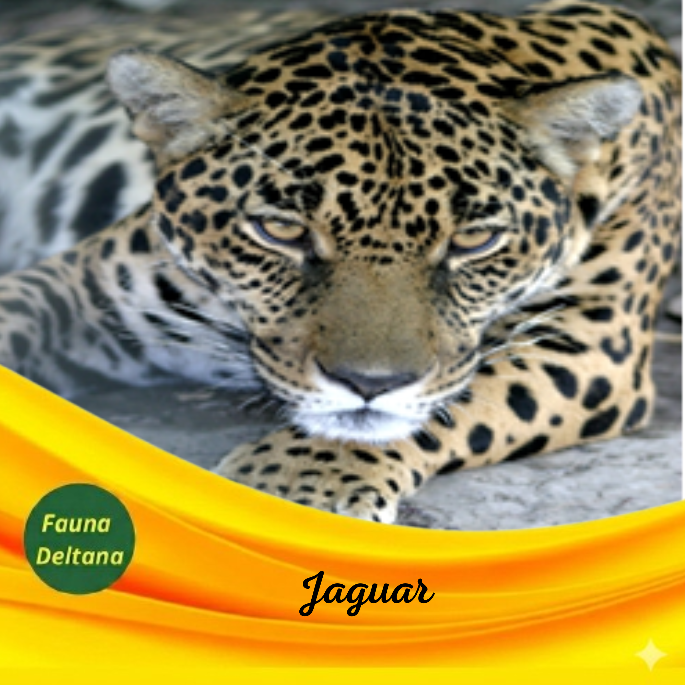
Jaguar en su hábitat natural
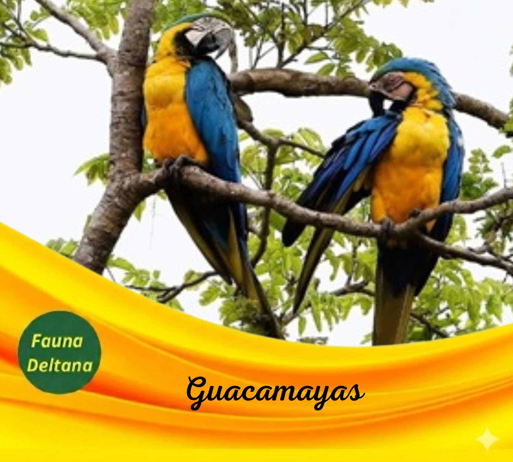
Guacamayas rojas y verdes
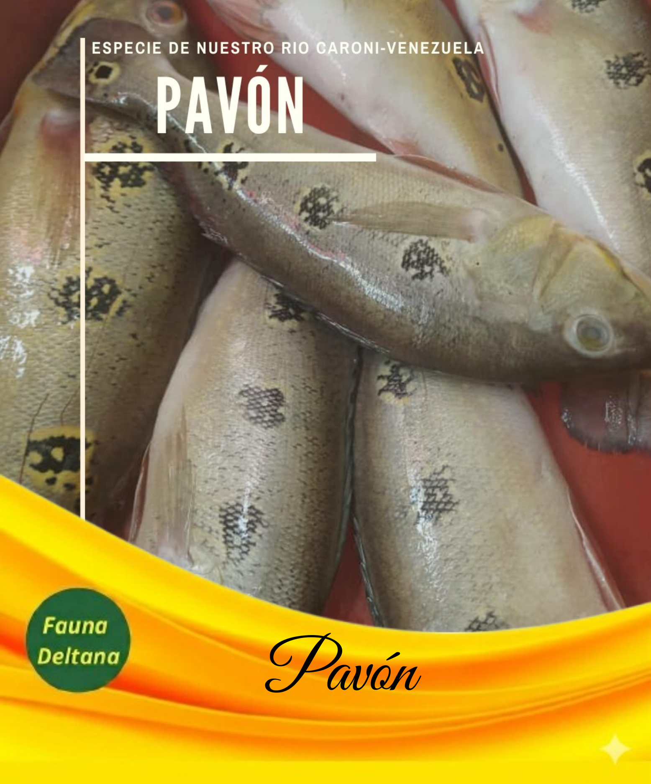
Peces del Orinoco
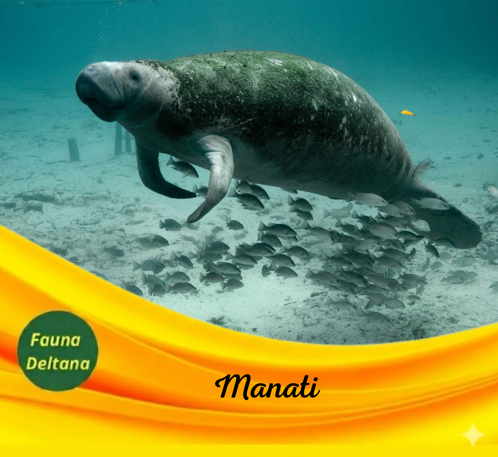
Manatí del Caribe
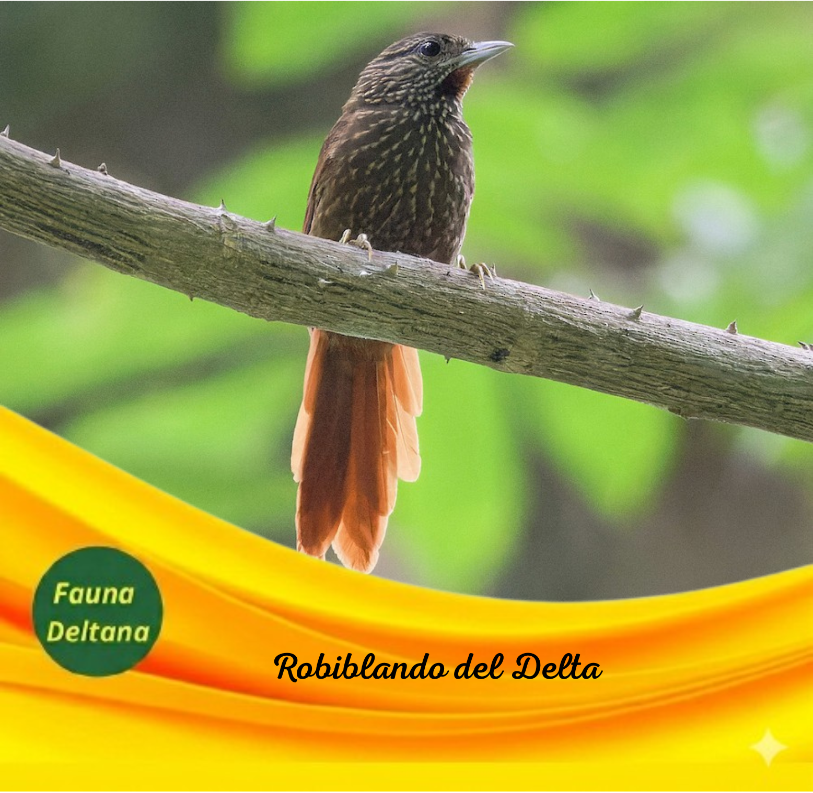
Robiblando
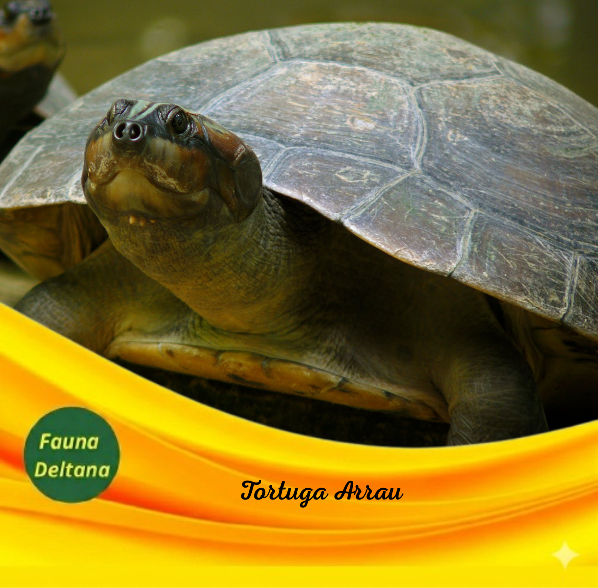
Tortuga Arrau
Ecosistemas del Delta
- Bosques de Manglar: Protegen las costas y sirven de criadero para numerosas especies marinas
- Selva Tropical: Alta biodiversidad con especies endémicas de flora y fauna
- Sabanas Inundables: Se inundan estacionalmente, creando refugio para aves acuáticas
- Estuarios: Zona de transición entre agua dulce y salada, ecosistema único
Historia, Deporte y Arte
Los tres pilares de nuestra cultura y superación
Historia y Raíces
Desde la llegada de los primeros pobladores Warao hace milenios hasta la fundación de Tucupita en 1848. El Delta ha sido escenario de misiones capuchinas y la heroica resistencia de sus pueblos originarios, forjando una identidad única en Venezuela.
- Vicente Yáñez Pinzón (1500): Descubridor del Delta del Orinoco
- Padre Gumilla: Fue un misionero que describió la cultura Warao en 1791
- Alonso de Ojeda: Reconoció la desembocadura del río Orinoco.
Deporte y Disciplina
El deltano es atleta por naturaleza. El canotaje es nuestra disciplina bandera, aprovechando nuestros caños para formar campeones. También destacan el fútbol sala, el coleo y la lucha, deportes que han llevado el nombre del estado a lo más alto.
- Canotaje y Remo sobre el Orinoco
- Potencia en Lucha Olímpica
- Juegos Intercomunidades Warao
Arte y Expresión
Nuestra expresión artística nace de la fibra de moriche y la madera de sangrito. El arte Warao es reconocido mundialmente por sus tejidos intrincados, además de nuestra música tradicional que celebra la conexión con la selva y el agua.
- Tejido de cestas y chinchorros
- Escultura en madera de Sangrito
- El arte, la escultura y pintura
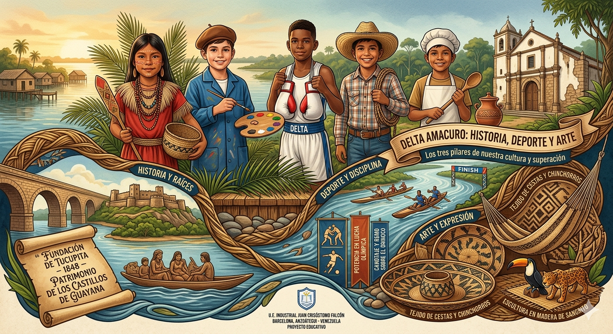
Conexión entre gente, deporte y arte en el Delta
Una Aventura Inolvidable
Explorar el Delta Amacuro es una experiencia única que combina ecoturismo, cultura y aventura en uno de los paisajes más extraordinarios de Venezuela.
Navegación por los Caños
Recorre el laberinto de ríos y caños en curiara, la embarcación tradicional Warao. Descubre la intrincada red acuática del delta.
Sitios de Interés
Otros sitios de interés son la Catedral Divina Pastora, Castillos de Guayana, Piedra de Morocoto.
Turismo Comunitario
Convive con comunidades Warao, aprende sobre sus tradiciones, artesanías y forma de vida en armonía con el delta.
Parque Nacional Mariusa
Área protegida de 331,000 hectáreas que conserva la biodiversidad del delta. Ecoturismo responsable y sustentable.
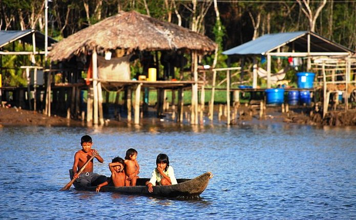
Navegación por los Caños en Curiara
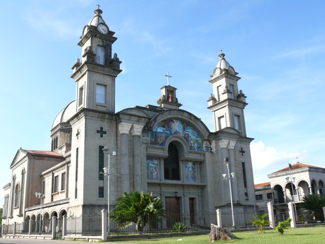
Catedral de la Divina Pastora - Tucupita
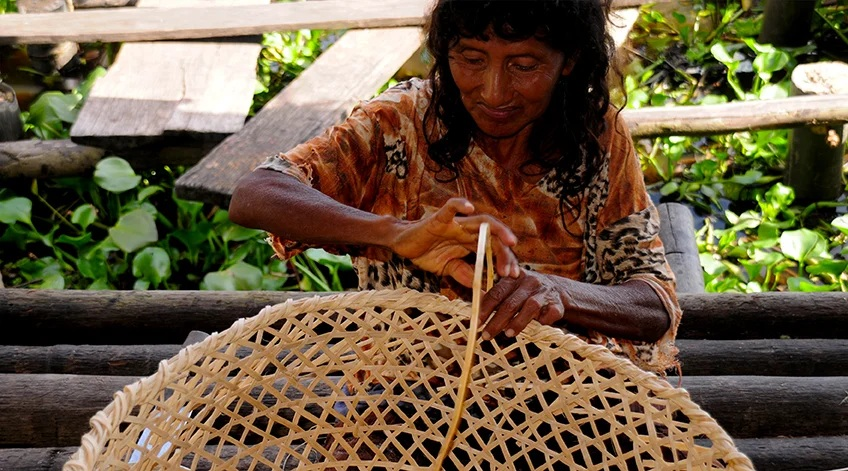
Turismo Comunitario y Artesanía
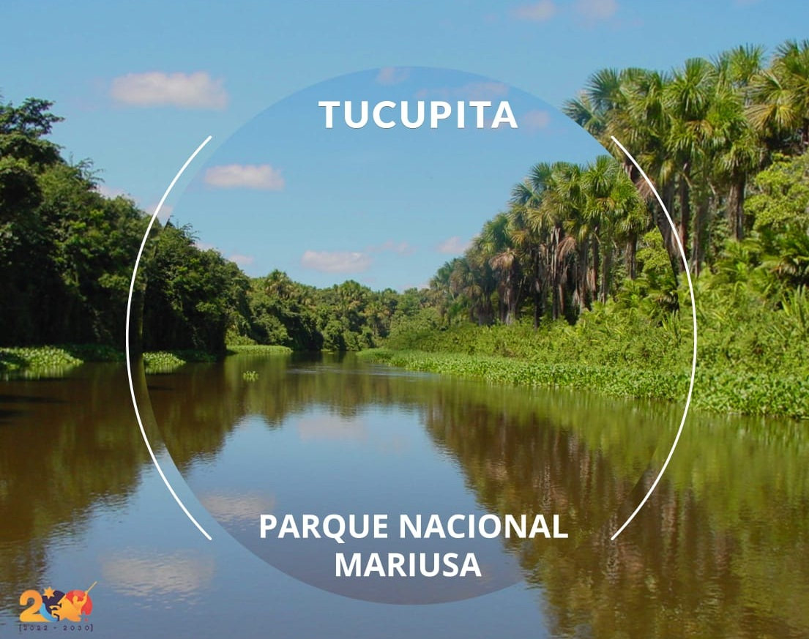
Parque Nacional Mariusa: Ecoturismo

Castillo Guayana
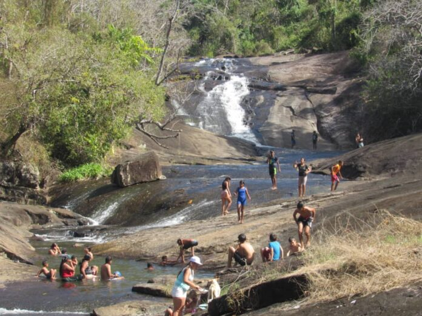
Quebrada de Casacoima
Sobre Este Proyecto Educativo
Unidad Educativa Industrial Juan Crisóstomo Falcón
Ubicación: Barcelona, Estado Anzoátegui, Venezuela
Este proyecto forma parte de una iniciativa estudiantil para promover el conocimiento y preservación del patrimonio cultural y natural venezolano. A través de la investigación y divulgación sobre Delta Amacuro, buscamos:
- Valorar la diversidad cultural de Venezuela
- Dar visibilidad a la cultura ancestral Warao
- Concientizar sobre la importancia de conservar ecosistemas únicos
- Aplicar tecnología (código QR, web) para fines educativos
- Desarrollar habilidades de investigación y presentación
"Preservar nuestra historia y biodiversidad es responsabilidad de todos. Este proyecto es nuestro aporte al conocimiento y valoración del Delta Amacuro."
Acceso Rápido vía Código QR
Escanea este código QR para acceder a la página desde cualquier dispositivo móvil
Escanea el código QR para visitar la página en tu dispositivo móvil